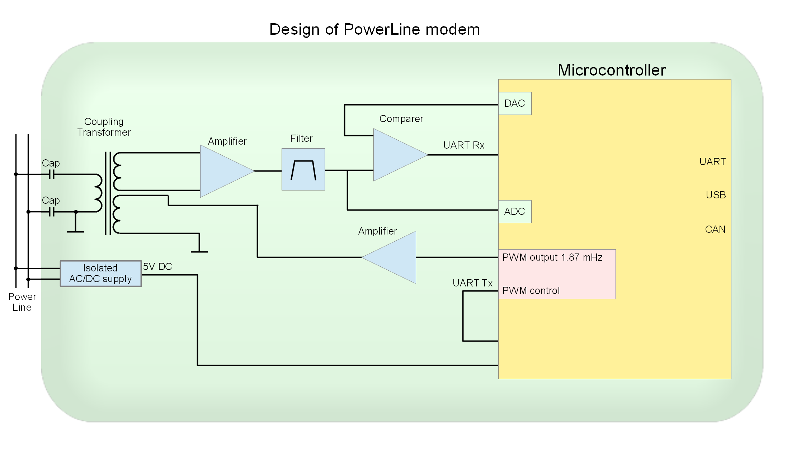
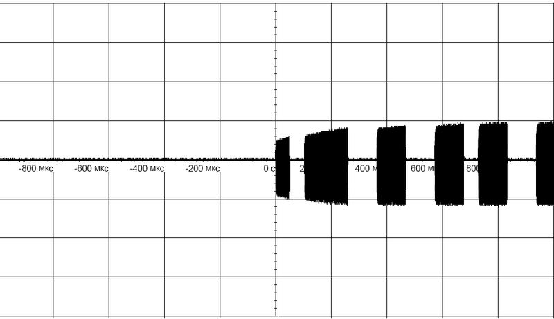
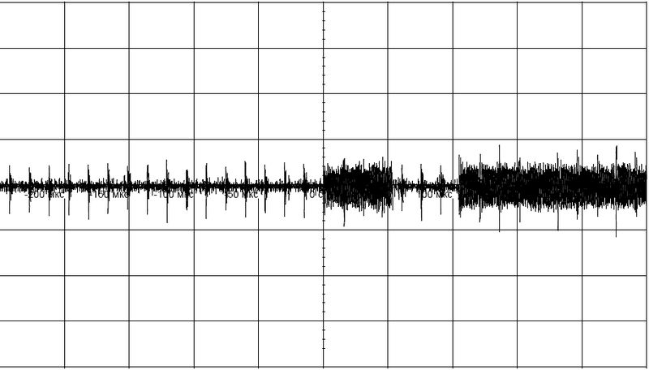
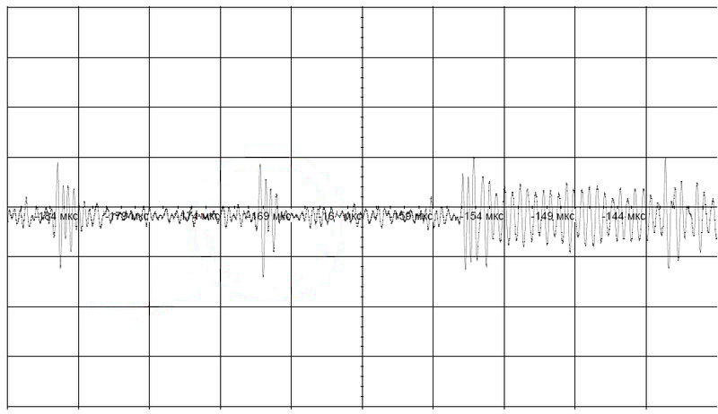
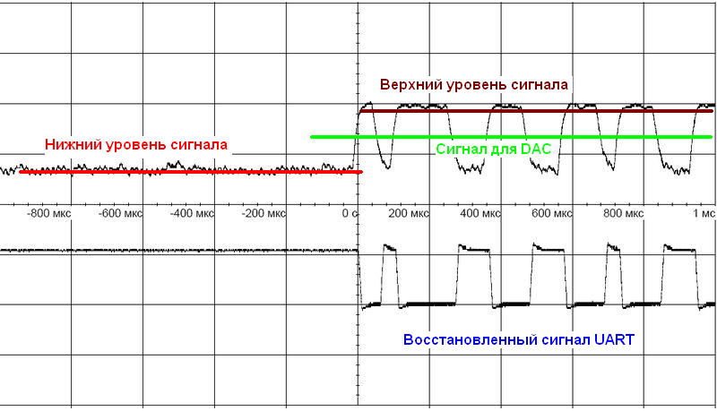

What is interesting about PowerLine? It's no additional wiring is required. Most of the devices in the modern world are powered by external sources by wires. Radio modules in their mass are no exception. Power can be either a constant current of 12-24V or alternating current of 110V - 220V. To transmit information it does not matter if there is voltage in the line or not, you need only two wires.
The prototypes of the modem were made, tests were carried out, the electric circuit shcemes was develop.
A modem is a device that modulates the UART signal with a radio frequency. The signal modulation method is CW, the frequency is 1.87 MHz (160 m). The UART speed is 1200-19200 bps.
Introduction
The circuit is designed with minimum amount of parts surrounding the microcontroller and maximum "pleasure", i.e., the load on the microcontroller is minimized. The hardware capabilities of the microcontroller are used as much as possible.
The microcontroller can perform tasks with sensors, load control (relays, triacs), etc.

Fig. 1
Block diagram of the modem
Fig. 2
Electric scheme (clickable)
As a meander of 1.87 MHz, PWM (PA3) is used. The percent of infill is 0 and 50%. The signal PB10 (Tx) is the control. The control signal is routed to PA4, which generates an interrupt when the state changes. The state of PA4 has changed to a low - set up 50% PWM filling. The state has changed to a high - set up 0% infill. The signal PWM is amplified by a transistor VT2, which is loaded with an oscillating circuit L2-C14. The circuit is designed for a resonance frequency of 1.87 MHz. The output of the transformer coil L3 will be a "pure sine".
To block the reception signal during transmission (turning off the "echo"), it is enough to set 3.3V on the output of DAC (PA5), at that the receiving signal level will never exceed 2V and the comparator will never turn on. The signal will not be accepted.
And so in more detail:
Description of the work of modem
Capacitors C12, C13 and transformer coil L3 perform the following functions:
galvanic isolation
Band-pass filter
Because Our modem is most likely to work in an environment with other modems, eg modems G3 Prime, HomePlug, ... then the task is to filter out frequencies not included in the frequency range we used when receiving the signal.
With galvanic isolation everything is clear, why the bandpass filter? If you look at the circuit, it's just a high-pass filter, but ... As a high-pass filter, the filter is designed for a cut-off frequency of 1.7 MHz (at low frequencies). Those. All that is lower, including a 50-60 Hz network is not visible in principle. The resonance frequency of the oscillatory circuit is approximately 2.5-3 MHz. The ferrite is selected for which the operating frequency is approximately 1 MHz. Thus, the "physics" of ferrite works as a low-pass filter. As a result, the frequencies of modem by passed is 1.8 - 1.9 MHz. All what lower and higher is cut. Our required frequency is 1.87 MHz. At the resonance frequency, the amplitude amplification (simulation) is approximately 100-120 times. But taking into account the physical limitations of ferrite, the real resonance was obtained at the frequencies 1.8 - 1.9 MHz, and is approximately 15-30 times in amplitude. Just what we need.
For receiving / transmitting, UART3 (PB10; PB11) is used.

Transmission mode
Fig. 3
Modulated signal UART (output), coil L3
Receive Mode
The L1 coil of the transformer has no "tricky" functions. Works as a transformer coil in order to separate the receiving and transmitting lines. Next - a two-stage amplifier. On the VT3 amplitude amplifier (k-t gain approximately 250 times). Linearity does not interest us, the task is to maximize amplification. On the VT4, the current amplifier, the detector and the UART signal inverter, plus the amplitude-limiting filter (cuts short bursts - where the noise frequency coincided with our operating frequency and was summed). Do not confuse the circuit of the inclusion of this transistor as an emitter follower, it is not, the mode of operation is completely different.
Fig. 4
Input signal on the base of transistor VT3
Fig. 5
Increased fragment of the input signal.
separate impulses are noise in the line.
The modem was tested on a noisy power line. The signal-to-noise ratio can be up to 15-20 dB.


Figure 4 shows how the bandpass filter works, the signal frequency is 1.87 MHz.
Fig. 6
Calculation of the optimal voltage
PA5 output for comparator operation
Detecting of the UART signal
The input of the microcontroller PA2-ADC, continuously scans the received and detected signal. The data is sent in the DMA mode to the ring buffer. Depending on the distance of the signal source, the upper boundary will "float". The problem is to find the middle between the signal "zero" and the upper boundary. This will be the optimum for the comparator. The calculated voltage is set on the PA5 DAC. The figure below explains how it looks.

The upper oscillogram is the output of the transistor VT4, the lower one is the output of the comparator, the recovered signal is UART.
Further, the restored UART signal Rx is applied to the PB11 input of the hardware UART. By receiving a byte, an interrupt is triggered, in which we analyze the state of data reception: whether all data is received in accordance with the protocol, encoding / decoding Hamming, etc.
Implementation in the HW
A specialized board is developed - the PLC modem.
Protocol
The protocol of data exchange can be practically anything. For example MODBUS. The device number and speed are recorded in the microcontroller. I use a protocol similar to CAN, except for broadcast commands. Speed settings and device numbers are produced by any terminal (eg terraterm, Putty, ...) using a USB-UART device.
Testing of modems was carried out on a line with a maximum length of 150 m. There was not a longer line "at hand". At the maximum length, you need to conduct tests and see real the signal attenuation.
Given the voltage drop in the wires for direct current, for 24V the length of the wire (segment) can reach 300-350 meters. Those. The line should be segmented by several power sources. A pair of modems can be used as a gateway between power line segments. The transmission protocol between the gateway modems can be CAN.